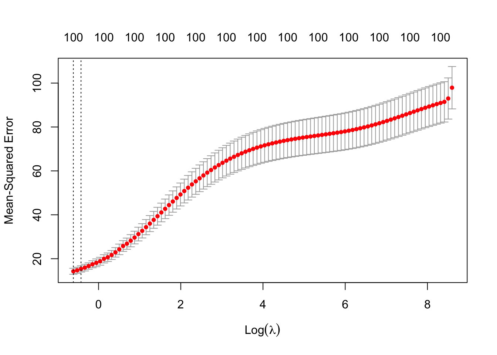
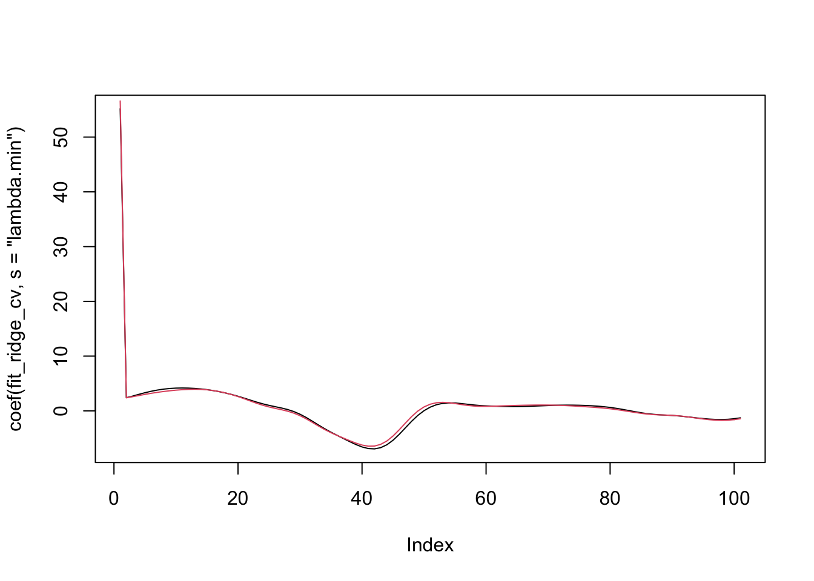
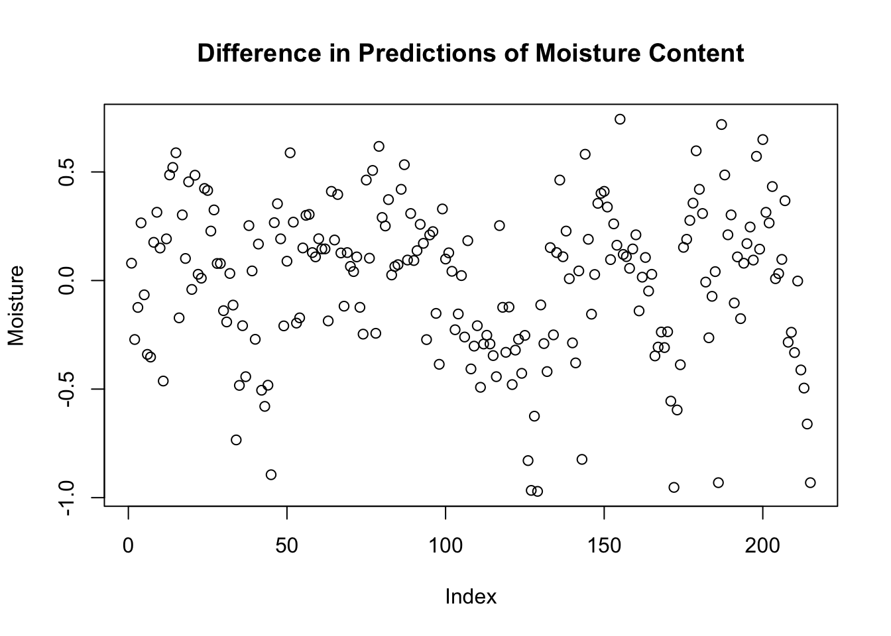
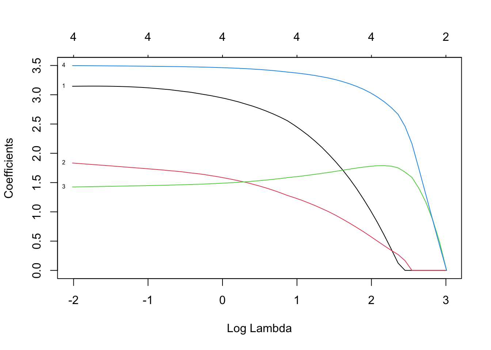
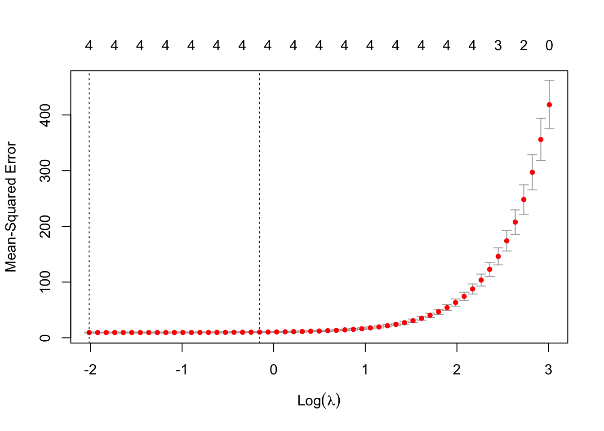
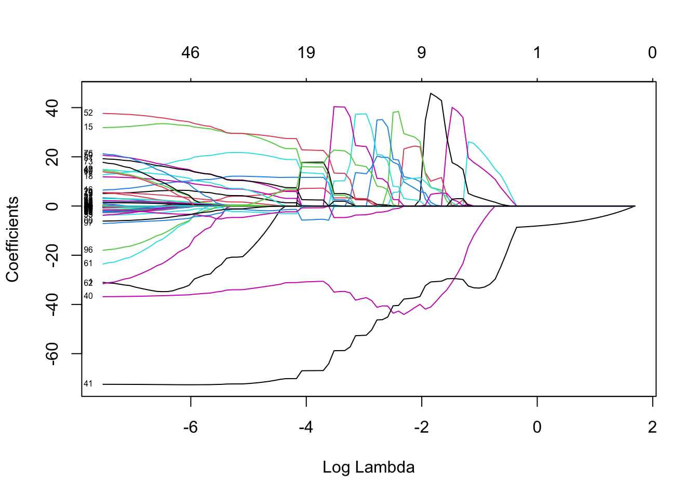
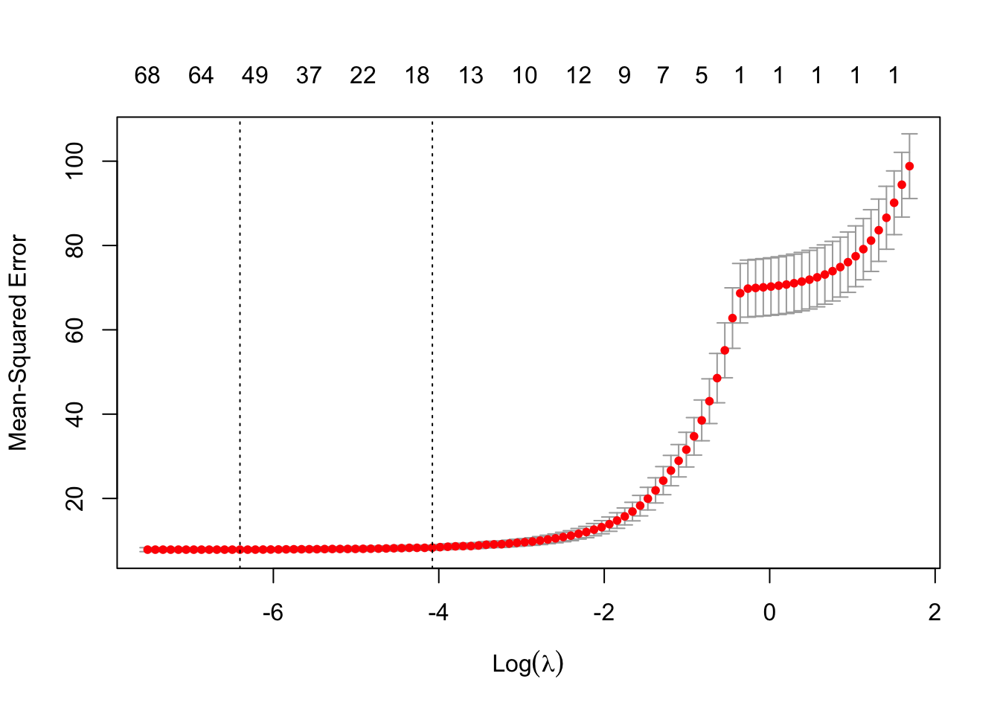
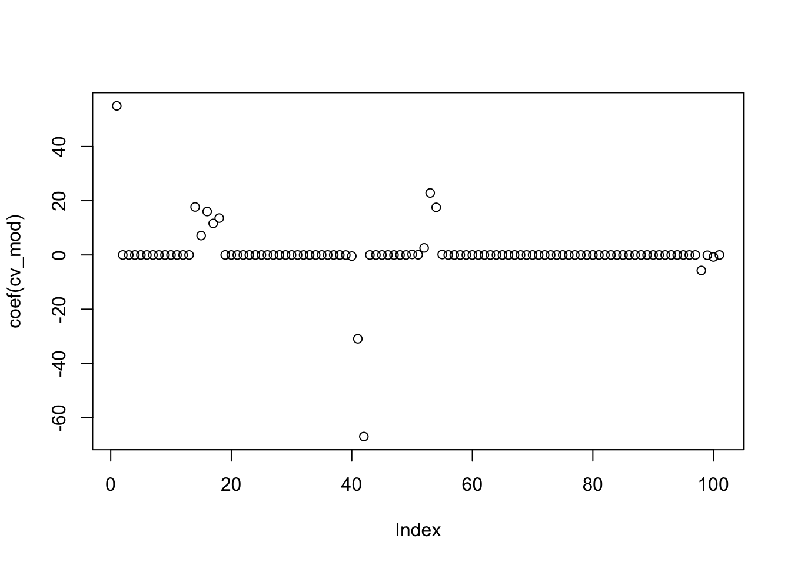

Chapter 6 Variable Selection
We have already seen times when we have more predictors than optimal for predicting the response. We discussed an ad hoc method of variable selection using \(p\)-values, which can be useful for explanatory model building. We also looked at projecting the predictors onto a smaller subspace using PCA, which works about as well as projecting randomly onto subspaces in many cases.
The issue with PCA regression is that the choice of directions of maximal variance may have nothing to do with the response. It **could* be that the predictive value of the predictors is in a direction that has small variance relative to other directions, in which case it would be hidden in one of the later components. For this reason, we will want to consider the relationship of the components in the predictors with the response. That is the idea behind partial least squares.
In the next section, we will consider ridge and lasso regression. These methods attempt to minimize an error function that also includes the magnitudes of the coefficients. The thought is that if a predictor doesn’t have much predictive power, then the penalty associated with the coefficient will force the coefficient to be zero, which is the same as eliminating it from the model.
Next, we will talk about the Akaike Information Criterion, which is a classical way of variable selection that also performs well in predictive models.
Finally, we will take a long overdue detour and talk about interactions. Interactions really belonged in the classical theory section, but are also useful for predictive modeling. We will discuss their use both in explanatory model building and predictive model building.
6.1 Partial Least Squares
As mentioned above, partial least squares first finds the direction in the predictor space that has maximum covariance with the response. Let’s do that using simulations so that we can understand what is going on. Our data is also simulated data.
set.seed(2162020)
Sigma <- matrix(rnorm(9), nrow = 3)
Sigma <- Sigma %*% t(Sigma)
dd <- as.data.frame(MASS::mvrnorm(500, mu = c(0,0,0), Sigma = Sigma))
names(dd) <- c("x", "y", "z")
cor(dd)## x y z
## x 1.0000000 0.3970130 -0.4702539
## y 0.3970130 1.0000000 -0.9928534
## z -0.4702539 -0.9928534 1.0000000dd <- mutate(dd, response = 2 * (x + 4 *y) + .25 * (x + 6*y + z) + rnorm(500, 0, 7))
summary(lm(response ~., data = dd))##
## Call:
## lm(formula = response ~ ., data = dd)
##
## Residuals:
## Min 1Q Median 3Q Max
## -20.1504 -4.6839 -0.2462 4.6686 19.8194
##
## Coefficients:
## Estimate Std. Error t value Pr(>|t|)
## (Intercept) -0.1148 0.3203 -0.358 0.720159
## x 2.3100 0.6733 3.431 0.000652 ***
## y 12.5728 3.1097 4.043 6.11e-05 ***
## z 4.3116 3.9722 1.085 0.278256
## ---
## Signif. codes: 0 '***' 0.001 '**' 0.01 '*' 0.05 '.' 0.1 ' ' 1
##
## Residual standard error: 7.147 on 496 degrees of freedom
## Multiple R-squared: 0.7119, Adjusted R-squared: 0.7101
## F-statistic: 408.5 on 3 and 496 DF, p-value: < 2.2e-16We begin by centering and scaling the predictors.
dd <- dd %>% mutate(x = scale(x),
y = scale(y),
z = scale(z))Next, as in the case of PCA, we randomly select values in the unit sphere of \(R^3\), and we compute the covariance of the projection of the data onto that direction with the response. We will keep track of the largest and that will be our rough estimate for the PLS component 1. We begin with some helper functions, which are the inner product of two vectors and the norm of a vector.
ip <- function(x, y) {
sum(x * y)
}
mynorm <- function(x) {
sqrt(sum(x^2))
}Next, we see how to take a random sample from the sphere, project the data onto that direction, and compute the covariance with the response.
rvec <- rnorm(3)
rvec <- rvec/mynorm(rvec)
dd_p <- apply(dd[,1:3], 1, function(x) ip(x, rvec))
cov(dd_p, dd$response)## [1] 0.3228743Now, we do this 1000 times, and keep track of the largest component. This time, instead of taking random points on the sphere, we jitter the current best a bit and if it improves things, then we move in that direction.
largest_cov <- abs(cov(dd_p, dd$response))
largest_direction <- rvec
for(i in 1:1000) {
rvec <- largest_direction
rvec <- rvec + rnorm(3, 0, .2)
rvec <- rvec/mynorm(rvec)
dd_p <- apply(dd[,1:3], 1, function(x) ip(x, rvec))
curr_cov <- abs(cov(dd_p, dd$response))
if(curr_cov > largest_cov) {
largest_cov <- abs(cov(dd_p, dd$response))
largest_direction <- rvec
print(largest_direction)
}
}## [1] 0.96147443 -0.27409769 0.02091332
## [1] 0.999462344 0.031434892 0.009320402
## [1] 0.9638841 0.1690204 -0.2058142
## [1] 0.9480203 0.2729168 -0.1636276
## [1] 0.8904580 0.3637548 -0.2734355
## [1] 0.8022974 0.5139944 -0.3035270
## [1] 0.6743569 0.7131305 -0.1915402
## [1] 0.4528270 0.7976425 -0.3983895
## [1] 0.3159840 0.8273111 -0.4644465
## [1] 0.2028455 0.6537100 -0.7290521
## [1] 0.4530832 0.6443218 -0.6160885
## [1] 0.3844822 0.5933179 -0.7072109
## [1] 0.3637054 0.6369490 -0.6797164
## [1] 0.3161830 0.6750865 -0.6665482
## [1] 0.3338814 0.6594096 -0.6735742
## [1] 0.3326478 0.6691214 -0.6645464According to this, our estimate for the first PLS component is 0.333, 0.669, -0.665. This is the direction of the data that has the largest covariance with the response. Let’s check it against the first component found using the plsr function in the pls package.
library(pls)##
## Attaching package: 'pls'## The following object is masked from 'package:caret':
##
## R2## The following object is masked from 'package:stats':
##
## loadingsplsmod <- plsr(response ~ x + y + z, data = dd)
loadings(plsmod)##
## Loadings:
## Comp 1 Comp 2 Comp 3
## x 0.401 -0.942 0.100
## y 0.645 0.281 0.678
## z -0.655 -0.186 0.728
##
## Comp 1 Comp 2 Comp 3
## SS loadings 1.006 1.002 1.000
## Proportion Var 0.335 0.334 0.333
## Cumulative Var 0.335 0.669 1.002plsmod$projection## Comp 1 Comp 2 Comp 3
## x 0.3306078 -0.9135712 0.06426708
## y 0.6676654 0.3579067 0.69202962
## z -0.6670243 -0.2072125 0.72009477We see that the first component that plsr got in the projection is \((0.331, 0.668, -0.6667)\), which is pretty close to what we got. We confirm that the covariance for that vector is slightly better than the one we got via our crude technique.
rvec <- plsmod$projection[,1]
mynorm(rvec)## [1] 1dd_p <- apply(dd[,1:3], 1, function(x) ip(x, rvec))
cov(dd_p, dd$response)## [1] 16.67199largest_cov## [1] 16.67189Now, in PCA to get the second component, we looked at all directions perpendicular to the first component and found the one with maximum variance. In PLS, we no longer force the second component to be orthogonal to the first component. That’s one difference. But, we do want it to pick up different information than the first component. How do we accomplish that?
A first idea might be to find the direction that has the highest covariance with the residuals of the response after predicting on the directions chosen so far. That is pretty close to what happens, but doesn’t work exactly. In partial least squares, we first deflate the predictor matrix by subtracting out \(d d^T M\), where \(d\) is the first direction, \(d^T\) is the transpose of \(d\), and \(M\) is the original matrix. Then, we find the direction of maximum covariance between the residuals of the first model and this new matrix. I include the details below, but this section is OPTIONAL.
6.1.1 Optional PLS Stuff
first_vec <- largest_direction
dd$direction_1 <- apply(dd[,1:3], 1, function(x) ip(x, first_vec))
m1 <- lm(response ~ direction_1, data = dd)
pvec <- c(1,0,0)
#first_vec
#dd$direction_1 <- apply(dd[,1:3], 1, function(x) ip(x, first_vec))
E <- as.matrix(dd[,1:3])
new_dat <- E - dd$direction_1%*% t(dd$direction_1) %*% E /(mynorm(dd$direction_1)^2)
projections <- apply(new_dat, 1, function(x) ip(x, pvec))
best_cov <- abs(cov(m1$residuals, projections))
best_dir <- pvec
for(i in 1:1000) {
pvec <- best_dir + rnorm(3,0,.02)
pvec <- pvec/mynorm(pvec)
projections <- apply(new_dat, 1, function(x) ip(x, pvec))
covv <- abs(cov(m1$residuals, projections))
if(covv > best_cov) {
best_cov <- covv
best_dir <- pvec
print(pvec)
}
}## [1] 0.999848603 -0.016853769 0.004326839
## [1] 0.99898323 -0.04016527 0.02047567
## [1] 0.99817648 -0.03972204 0.04545186
## [1] 0.99821353 -0.04789278 0.03572155
## [1] 0.99796648 -0.06057936 0.01982518
## [1] 0.99677991 -0.05339694 0.05982115
## [1] 0.99623029 -0.05875939 0.06381645
## [1] 0.99568104 -0.06083110 0.07013451
## [1] 0.99511372 -0.07517205 0.06401446
## [1] 0.99411839 -0.07987067 0.07313892
## [1] 0.99375252 -0.09170947 0.06360266
## [1] 0.9914283 -0.1040483 0.0790188
## [1] 0.9878531 -0.1181481 0.1009324
## [1] 0.9855875 -0.1333311 0.1041156
## [1] 0.98504862 -0.14953909 0.08554107
## [1] 0.98397083 -0.16392295 0.07021871
## [1] 0.97769795 -0.20250526 0.05566264
## [1] 0.96729806 -0.23685566 0.09074065
## [1] 0.9657439 -0.2268927 0.1259303
## [1] 0.9587509 -0.2588302 0.1174887
## [1] 0.9531252 -0.2650923 0.1458709
## [1] 0.9407376 -0.3087545 0.1402978
## [1] 0.9360941 -0.3106349 0.1650268
## [1] 0.9354886 -0.3148256 0.1604551
## [1] 0.9389629 -0.3034146 0.1621362
## [1] 0.9374347 -0.3112765 0.1559589
## [1] 0.9379053 -0.3070694 0.1613752
## [1] 0.9378402 -0.3082186 0.1595527
## [1] 0.9378103 -0.3092016 0.1578172best_dir## [1] 0.9378103 -0.3092016 0.1578172plsmod$loading.weights##
## Loadings:
## Comp 1 Comp 2 Comp 3
## x 0.331 -0.938 0.100
## y 0.668 0.308 0.678
## z -0.667 -0.157 0.728
##
## Comp 1 Comp 2 Comp 3
## SS loadings 1.000 1.000 1.000
## Proportion Var 0.333 0.333 0.333
## Cumulative Var 0.333 0.667 1.000As we can see, we have recovered the loading weights, which map the deflated predictors onto the scores. Continuing in this fashion, we could find all of the loading weights, use them to compute the scores, and then compute the loadings via
corpcor::pseudoinverse(as.matrix(dd[,1:3])) %*% plsmod$scores## Comp 1 Comp 2 Comp 3
## [1,] 0.3306078 -0.9135712 0.06426708
## [2,] 0.6676654 0.3579067 0.69202962
## [3,] -0.6670243 -0.2072125 0.72009477And this would give us our projection, which we could use to transform the original (or new) data into the basis spanned by the partial least squares representation. The trickiest part about this whole thing is understanding why we deflate the data each time we get a new component in our partial least squares. Let’s leave that for another time, shall we?
as.matrix(dd[,1:3]) %*% plsmod$projection %>%
head()## Comp 1 Comp 2 Comp 3
## [1,] -1.4064660 -0.4825527 0.05256135
## [2,] -0.6267724 -0.7521577 0.04244780
## [3,] 0.2123543 -1.7215781 0.04869281
## [4,] 0.3974183 0.8213185 -0.11928340
## [5,] -1.9513938 2.2888549 -0.06070022
## [6,] 0.3300496 -0.9384224 0.03141818plsmod$scores[1:6,1:3]## Comp 1 Comp 2 Comp 3
## 1 -1.4064660 -0.4825527 0.05256135
## 2 -0.6267724 -0.7521577 0.04244780
## 3 0.2123543 -1.7215781 0.04869281
## 4 0.3974183 0.8213185 -0.11928340
## 5 -1.9513938 2.2888549 -0.06070022
## 6 0.3300496 -0.9384224 0.031418186.2 Ridge/Lasso and Elastic Net
PCR and partial least squares regression both have the goal of reducing the number of predictor variables by replacing the given predictors with a smaller set of linear combinations of the predictors. This has the advantage of finding directions in the data that are aligned with either the signal of the data or the response, but has as a disadvantage that it can be hard to interpret the new predictors. The techniques of this section work directly with the predictors, and lead to models that tend to be more easily interpretable.
6.2.1 Ridge Regression
We start with ridge regression. The basic idea is that minimizing SSE has no penalty at all on having arbitrarily large coefficients. If we add a penalty related to the size of the coefficients, then minimizing this new cost function will keep the coefficients relatively small. Ideally, it would force some of them to be either zero, or close enough to zero that we could round to zero and remove that variable from the model that we are building.
Some more details. Suppose our model is
\[ y = \beta_0 + \sum_{p = 1}^P \beta_p x_p + \epsilon \]
Recall that the SSE based on data is \[ SSE = \sum_{i = 1}^n\bigl(y_i - \hat y_i\bigr)^2 \] where \(\hat y_i\) is the estimate of the response \(y\). In ridge regression, we add a penalty based on the size of the coefficients \(\beta_p\):
\[ SSE_{L^2} = \sum_{i = 1}^n \bigl(y_i - \hat y_i\bigr)^2 + \lambda \sum_{p = 1}^P \beta_p^2 \] Note that there is also a tuning parameter \(\lambda\) in the SSE. Depending on the scales of the predictors and the responses, as well as the relationship between the response and predictor, different \(\lambda\) will need to be chosen.
Let’s see how this works with a simple simulated example. It is suggested to center and scale our predictors before using ridge regression. We begin with an OLS model.
sigma <- matrix(rnorm(9), nrow = 3)
sigma <- t(sigma) %*% sigma
dd <- MASS::mvrnorm(500, mu = c(0,0,0), Sigma = sigma)
response <- dd[,1] + 2 * dd[,2] + rnorm(500,0,3)
dd <- scale(dd)
lm(response ~ dd) %>% summary()##
## Call:
## lm(formula = response ~ dd)
##
## Residuals:
## Min 1Q Median 3Q Max
## -8.636 -1.907 0.143 1.976 8.883
##
## Coefficients:
## Estimate Std. Error t value Pr(>|t|)
## (Intercept) 0.04982 0.13183 0.378 0.7057
## dd1 1.49658 0.13493 11.091 <2e-16 ***
## dd2 4.57711 0.24714 18.521 <2e-16 ***
## dd3 0.47260 0.24475 1.931 0.0541 .
## ---
## Signif. codes: 0 '***' 0.001 '**' 0.01 '*' 0.05 '.' 0.1 ' ' 1
##
## Residual standard error: 2.948 on 496 degrees of freedom
## Multiple R-squared: 0.7214, Adjusted R-squared: 0.7197
## F-statistic: 428.2 on 3 and 496 DF, p-value: < 2.2e-16Now, let’s choose \(\lambda = 1\) and minimize the \(SSE_{L^2}\) cost function.
ssel2 <- function(dd, response, beta_0, beta, lambda = 1) {
sum((dd %*% beta + beta_0 - response)^2) + lambda * sum(beta^2)
}
ssel2(dd, response, 0, c(0,0,-1))## [1] 12370.04Now, if we want to minimize this, we use the optim function. First, we define the cost function just in terms of the variables that we are trying to minimize.
sse_for_optim <- function(beta) {
ssel2(dd, response, beta[1], beta[2:4])
}
optim(c(0,0,0,0), fn = sse_for_optim)## $par
## [1] 0.04953374 1.49598584 4.54315591 0.44305891
##
## $value
## [1] 4333.199
##
## $counts
## function gradient
## 269 NA
##
## $convergence
## [1] 0
##
## $message
## NULLlm(response ~ dd)##
## Call:
## lm(formula = response ~ dd)
##
## Coefficients:
## (Intercept) dd1 dd2 dd3
## 0.04982 1.49658 4.57711 0.47260We see that regularizing with \(\lambda = 1\) had little impact on the result! Since the actual minimum SSE is about 4000, and the coefficients are about 1, that makes sense. In order to get them on the same scale, we would need to have \(\lambda = 1000\) or so. Let’s try again with \(\lambda = 1000\) just to see. Before we do this, you should think about whether larger \(\lambda\) will be associated with coefficients that are closer to what we get with OLS, or further.
sse_for_optim <- function(beta) {
ssel2(dd, response, beta[1], beta[2:4], lambda = 1000)
}
optim(c(0,0,0,0), fn = sse_for_optim)## $par
## [1] 0.04975632 0.66185128 1.21633033 -0.82730013
##
## $value
## [1] 10477.42
##
## $counts
## function gradient
## 245 NA
##
## $convergence
## [1] 0
##
## $message
## NULLlm(response ~ dd)##
## Call:
## lm(formula = response ~ dd)
##
## Coefficients:
## (Intercept) dd1 dd2 dd3
## 0.04982 1.49658 4.57711 0.47260Still not a huge difference, but note that the large coefficients are now closer to the same size. If we do ridge regression with highly correlated predictors, it is often the case that the coefficients associated with the highly correlated predictors end up being about the same size. That is, ridge regression tends to spread out the weight of that direction across all of the predictors.
There are several R packages that implement ridge regression. One that gives the same answer as the algorithm described in the book is ridge.
ridge::linearRidge(response ~ dd, lambda = 1000, scaling = "scale")##
## Call:
## ridge::linearRidge(formula = response ~ dd, lambda = 1000, scaling = "scale")
##
## (Intercept) dd1 dd2 dd3
## 0.04981915 0.66178400 1.21647445 -0.82711643However, as we saw above, it can be tricky to find the right \(\lambda\), so other packages do more scaling and trickery, which means that their answers have twists from the algorithm that we described above. Here is the technique suggested by the book.
emod <- elasticnet::enet(x = dd, y = response, lambda = 1000)
enetCoef<- predict(emod, newx = dd,
s = 1,
mode = "fraction",
type = "coefficients")
enetCoef## $s
## [1] 1
##
## $fraction
## 0
## 1
##
## $mode
## [1] "fraction"
##
## $coefficients
## [1] 2.363010 4.483117 -3.606031As long as the method is internally consistent with how it penalizes, it doesn’t matter so much whether it matches the exact definition we gave; it’s more of a frustration than a problem. As before, in any real problem, we will use cross validation to decide which \(\lambda\) to pick. We could again use train, as below:
library(caret)
data("tecator")
train(x = as.data.frame(absorp),
y = endpoints[,1],
method = "ridge")## Ridge Regression
##
## 215 samples
## 100 predictors
##
## No pre-processing
## Resampling: Bootstrapped (25 reps)
## Summary of sample sizes: 215, 215, 215, 215, 215, 215, ...
## Resampling results across tuning parameters:
##
## lambda RMSE Rsquared MAE
## 0e+00 4.572167 0.8326010 2.369945
## 1e-04 2.628113 0.9345484 2.086432
## 1e-01 4.054888 0.8547589 3.255681
##
## RMSE was used to select the optimal model using the smallest value.
## The final value used for the model was lambda = 1e-04.But we can get some better information more easily out of the dedicated package glmnet. Let’s see how to do it. I am following this book which has tons of interesting things!
library(glmnet)## Loading required package: Matrix##
## Attaching package: 'Matrix'## The following objects are masked from 'package:tidyr':
##
## expand, pack, unpack## Loaded glmnet 4.1-1fit_ridge <- glmnet(x = absorp, y = endpoints[,1], alpha = 0)
plot(fit_ridge, label = T, xvar = "lambda")
Here, we can see that as \(\lambda\) gets bigger the coefficients of the variables are forced to be smaller and smaller, until eventually they are essentially zero.
fit_ridge_cv <- cv.glmnet(absorp, endpoints[,1], alpha = 0)
plot(fit_ridge_cv)
The first vertical dotted line is where the smallest MSE is, and the second line is where the MSE is one standard error away from the smallest. In this case, larger \(\lambda\) corresponds to simpler models, or at least, models that have been more regularized.
The function glmnet returns the models associated with each of those two \(\lambda\)’s for further investigation and use. We can see the coefficients used in the model:
plot(coef(fit_ridge_cv, s = "lambda.min"), type = "l")
points(coef(fit_ridge_cv, s = "lambda.1se"), type = "l", col = 2)
We see that there isn’t a big difference in the coefficients for the two models! If we wanted to predict values, we could use predict.
predict(fit_ridge_cv, newx = absorp[1:2,], s = "lambda.min")## 1
## [1,] 63.72555
## [2,] 51.59263predict(fit_ridge_cv, newx = absorp[1:2,], s = "lambda.1se")## 1
## [1,] 63.64588
## [2,] 51.86430plot(predict(fit_ridge_cv, newx = absorp, s = "lambda.min") - predict(fit_ridge_cv, newx = absorp), ylab = "Moisture", main = "Difference in Predictions of Moisture Content")
Ridge regression is a regularization technique. The point is that if there are highly correlated variables and we resample, we are likely to get similar results using ridge regression with a similar penalty. Let’s check that out. We will need to come up with a covariance matrix that produces highly correlated predictors.
sigma <- matrix(runif(16, .9, 1.1), nrow = 4)
sigma <- sigma %*% t(sigma)
df <- MASS::mvrnorm(500, mu = c(0,0,0,0), Sigma = sigma)
cor(df)## [,1] [,2] [,3] [,4]
## [1,] 1.0000000 0.9996242 0.9926460 0.9982551
## [2,] 0.9996242 1.0000000 0.9936326 0.9984568
## [3,] 0.9926460 0.9936326 1.0000000 0.9978345
## [4,] 0.9982551 0.9984568 0.9978345 1.0000000response <- df[,1] + 2 * df[,2] + 3 * df[,3] + 4 * df[,4] + rnorm(500, 0, 3)
lm(response ~ df)##
## Call:
## lm(formula = response ~ df)
##
## Coefficients:
## (Intercept) df1 df2 df3 df4
## 0.01814 3.01538 4.20074 5.49045 -2.62774You should check that if you run the above code multiple times, you get quite different answers for the regression coefficients. Now, let’s do ridge regression.
ridge_model <- cv.glmnet(x = df, y = response, alpha = 0)
coefficients(ridge_model)## 5 x 1 sparse Matrix of class "dgCMatrix"
## 1
## (Intercept) -0.01171997
## V1 2.41032173
## V2 2.33671157
## V3 2.48730344
## V4 2.39171129The ridge-regression model typically gives a model of about \(t = 2.5 x_1 + 2.5 x_2 + 2.5 x_3 + 2.5 x_4\), which is about \(y = 10 x_i\) for any of the predictors \(x_i\).
6.2.2 LASSO
Unlike ridge regression, the LASSO is more of a variable selection technique. If we are trying to force the non-important or redundant predictors’ coefficients to be zero, we would want to use the so-called \(L_0\) norm as a penalty:
\[ SSE_{L_0} = \sum\bigl(\hat y_i - y_i\bigr)^2 + \lambda\bigl| \{p: \beta_p \not= 0\}\bigr| \]
However, this is a hard problem to solve when there are lots of variables! It essentially involves computing the SSE for each subset of predictors and seeing which one is the smallest. If we had 100 predictors, like in tecator, that would mean \(2^{100} \approx 1,267,561,000,000,000,000,000,000,000,000\) subsets. That’s gonna take some time, and even if we could do it, what if we found a data set that had 1000 predictors? I don’t have that kind of time. Instead, we solve the convex relaxation of the problem, which is to minimize
\[ SSE_{L_1} = \sum\bigl(\hat y_i - y_i\bigr)^2 + \lambda \sum_{i = 1}^P |\beta_i| \]
Again, we don’t typically penalize the intercept, though we could if that made sense for the problem you were working on. Let’s see how it works when we have the same four highly correlated synthetic data as we had in the last section.
sigma <- matrix(runif(16, .9, 1.1), nrow = 4)
sigma <- sigma %*% t(sigma)
df <- MASS::mvrnorm(500, mu = c(0,0,0,0), Sigma = sigma)
response <- df[,1] + 2 * df[,2] + 3 * df[,3] + 4 * df[,4] + rnorm(500, 0, 3)We will again use glmnet.
mod <- glmnet(x = df, y = response, alpha = 1)
plot(mod, xvar = "lambda", label = TRUE)
cv_mod <- cv.glmnet(x = df, y = response, alpha = 1)
plot(cv_mod)
coef(cv_mod)## 5 x 1 sparse Matrix of class "dgCMatrix"
## 1
## (Intercept) 0.1717041
## V1 2.9844920
## V2 1.6187466
## V3 1.4804404
## V4 3.4688456We see that the LASSO removed two of the variables, and the other two add up to about 10. (At least, that is what it seemed to be doing when I was practicing!) If we resample, then the LASSO will likely select different variables with different coefficients. So, LASSO doesn’t regularize as much as ridge regression, but it does do some variable selection. Let’s run it again on tecator.
mod <- glmnet(x = absorp, y = endpoints[,1], alpha = 1)
plot(mod, xvar = "lambda", label = TRUE)
cv_mod <- cv.glmnet(x = absorp, y = endpoints[,1], alpha = 1, type.measure = "mse")
plot(cv_mod)
plot(coef(cv_mod))
sum(abs(coef(cv_mod)) > 0)## [1] 20This model has 20 non-zero variables. That is quite a few more than PCR and PLS ended up with, but these are the original variables so we might have some hope of interpreting things. So, downside is more variables, upside is that the variables are more immediately interpretable. Now let’s just see what the estimated RMSE was. The first one is for the \(\lambda\) that is one standard error away from the minimum value, and the second is the minimum MSE observed.
cv_mod$cvm[cv_mod$lambda == cv_mod$lambda.1se]## [1] 8.325913cv_mod$cvm[cv_mod$lambda == cv_mod$lambda.min]## [1] 7.8592396.3 Step AIC
We mentioned before that we would ideally like to minimize \(SSE_{L_0}\), which is the sum-squared error plus a penalty based on how many of the coefficients are non-zero. While checking all subsets of coefficients would take too long, we can try a stepwise approach, which would approximate this. Let’s see how this would work in the example from above that is running through the chapter, but let’s make the correlation between variables smaller.
set.seed(2292020)
sigma <- matrix(runif(16, -.5, 1.5), nrow = 4)
sigma <- sigma %*% t(sigma)
df <- MASS::mvrnorm(500, mu = c(0,0,0,0), Sigma = sigma)
response <- df[,1] + 2 * df[,2] + 3 * df[,3] + rnorm(500, 0, 3)
cor(df)## [,1] [,2] [,3] [,4]
## [1,] 1.0000000 0.3755164 0.5917336 0.5171758
## [2,] 0.3755164 1.0000000 0.9393433 -0.3369446
## [3,] 0.5917336 0.9393433 1.0000000 -0.1552404
## [4,] 0.5171758 -0.3369446 -0.1552404 1.0000000We do LOOCV on the full model, then we do LOOCV estimate of MSE after removing each variable separately. So, in all, we do 5 LOOCV MSE estimates. If none of the 4 reduced models are better, then we are done. If one is better, that becomes our new “full model” and we see whether we can remove any of the other three variables.
One twist, though, is that in the real algorithm, we would also want to check whether adding variables back in would improve the MSE. We will not implement that here.
The reason that we are using LOOCV is that it is easy to compute for linear models without actually doing the interation! We won’t go through the details, but we will include the code here for anyone interested.
First, we find the hat matrix and the leverage values.
dd <- as.data.frame(df)
dd$response <- response
full_mod <- lm(response ~ ., data = dd)
df_intercept <- cbind(df, rep(1, 500))
hat_matrix <- df_intercept %*%
solve(t(df_intercept) %*%
df_intercept) %*%
t(df_intercept) #this is the hat matrix
diag(hat_matrix)[1:5] ## [1] 0.011226329 0.007003272 0.003909106 0.005312969 0.008961232hatvalues(full_mod)[1:5] #see, the diagonal of the hat matrix is given by hatvalues!## 1 2 3 4 5
## 0.011226329 0.007003272 0.003909106 0.005312969 0.008961232predict(full_mod)[1:5]## 1 2 3 4 5
## -8.117599 -8.990833 6.272003 -1.299794 13.264895(hat_matrix %*% response)[1:5] ## [1] -8.117599 -8.990833 6.272003 -1.299794 13.264895The hat matrix is called the hat matrix because when you multiply the hat matrix times the response, you get the predicted values! Sounds like magic, I know, but you can see that it is true above.
You can also get the residuals from the hat matrix:
((diag(1, 500) - hat_matrix) %*% response)[1:5]## [1] -1.3411735 -0.5974403 -2.4618286 0.9980398 -3.2304093full_mod$residuals[1:5]## 1 2 3 4 5
## -1.3411735 -0.5974403 -2.4618286 0.9980398 -3.2304093So far, this doesn’t seem too magical. But, check this out. We can get the LOOCV MSE score directly from the hat matrix.
1/500 * sum(((diag(1, 500) - hat_matrix) %*% response)^2/(1 - hatvalues(full_mod))^2)## [1] 8.008726Perhaps easier to understand:
mean((full_mod$residuals^2)/(1 - hatvalues(full_mod))^2)## [1] 8.008726It is the average value of the residuals squared, weighted by the reciprocal of 1 minus the leverage squared. Let’s verify through actual LOOCV.
errors <- sapply(1:500, function(x) {
dd_small <- dd[-x,]
mod_small <- lm(response ~ ., data = dd_small)
predict(mod_small, newdata = dd[x,]) - dd$response[x]
})
mean(errors^2) #behold!## [1] 8.008726Now, let’s remove each of the four variables separately, and estimate the MSE via LOOCV.
loocvs <- sapply(1:4, function(x) {
dd_skinny <- dd[,-x]
skinny_mod <- lm(response ~ ., data = dd_skinny)
mean((skinny_mod$residuals^2)/((1 - hatvalues(skinny_mod))^2))
})
loocvs## [1] 8.661742 8.960961 9.540100 7.985612By inspection, we see that we should remove variable number 4, because doing so has the lowest LOOCV estimate of MSE, and it is lower than the full model, which was 8.0087257. Then, we would repeat the above, seeing if we can remove any of variables 1, 2 and 3.
There is another way of doing this, using the Akaike Information Criterion. It can be shown that under some assumptions, the AIC is asymptotically equivalent to doing LOOCV. Here, by asymptotically equivalent, I mean that as the number of data points goes to infinity, LOOCV with MSE and the AIC will both yield the same suggestion as to which variable to remove, or whether to stay with the model you have.
MASS::stepAIC(full_mod, steps = 1)## Start: AIC=1040.09
## response ~ V1 + V2 + V3 + V4
##
## Df Sum of Sq RSS AIC
## - V4 1 6.75 3930.5 1039.0
## <none> 3923.7 1040.1
## - V1 1 337.21 4260.9 1079.3
## - V2 1 481.29 4405.0 1095.9
## - V3 1 768.89 4692.6 1127.6
##
## Step: AIC=1038.95
## response ~ V1 + V2 + V3##
## Call:
## lm(formula = response ~ V1 + V2 + V3, data = dd)
##
## Coefficients:
## (Intercept) V1 V2 V3
## -0.128 1.183 2.226 2.697Note that, in this case, stepAIC also chooses to remove the 4th variable. It is not the case that these two techniques will always give the same suggestion, though, even though in the limit as the number of observations goes to infinity they will.
Let’s try them out on the tecator data set.
data("tecator")
compute_loocv <- function(full_model) {
mean((full_model$residuals)^2/((1 - hatvalues(full_model))^2))
}
dd <- as.data.frame(absorp)
dd$response <- endpoints[,1]
full_model <- lm(response ~ ., data = dd)
mse_full <- compute_loocv(full_model)
mse_loocv <- sapply(1:ncol(absorp), function(x) {
dd_skinny <- dd[,-x]
skinny_model <- lm(response ~ ., data = dd_skinny)
compute_loocv(skinny_model)
})
which.min(mse_loocv)## [1] 45mse_loocv[45]## [1] 5.069154This suggests that our first move should be to remove variable 45, resulting in a decrease of almost a full unit in MSE! Now, let’s see what stepAIC suggests.
MASS::stepAIC(full_model, steps = 1)## Start: AIC=60.45
## response ~ V1 + V2 + V3 + V4 + V5 + V6 + V7 + V8 + V9 + V10 +
## V11 + V12 + V13 + V14 + V15 + V16 + V17 + V18 + V19 + V20 +
## V21 + V22 + V23 + V24 + V25 + V26 + V27 + V28 + V29 + V30 +
## V31 + V32 + V33 + V34 + V35 + V36 + V37 + V38 + V39 + V40 +
## V41 + V42 + V43 + V44 + V45 + V46 + V47 + V48 + V49 + V50 +
## V51 + V52 + V53 + V54 + V55 + V56 + V57 + V58 + V59 + V60 +
## V61 + V62 + V63 + V64 + V65 + V66 + V67 + V68 + V69 + V70 +
## V71 + V72 + V73 + V74 + V75 + V76 + V77 + V78 + V79 + V80 +
## V81 + V82 + V83 + V84 + V85 + V86 + V87 + V88 + V89 + V90 +
## V91 + V92 + V93 + V94 + V95 + V96 + V97 + V98 + V99 + V100
##
## Df Sum of Sq RSS AIC
## - V53 1 0.0007 111.30 58.448
## - V46 1 0.0015 111.30 58.449
## - V33 1 0.0023 111.31 58.451
## - V100 1 0.0138 111.32 58.473
## - V62 1 0.0272 111.33 58.499
## - V49 1 0.0320 111.33 58.508
## - V92 1 0.0566 111.36 58.556
## - V98 1 0.0666 111.37 58.575
## - V65 1 0.0669 111.37 58.576
## - V83 1 0.0680 111.37 58.578
## - V66 1 0.0708 111.37 58.583
## - V8 1 0.0765 111.38 58.594
## - V57 1 0.0783 111.38 58.598
## - V93 1 0.0994 111.40 58.639
## - V82 1 0.1009 111.40 58.641
## - V71 1 0.1013 111.40 58.642
## - V35 1 0.1058 111.41 58.651
## - V84 1 0.1115 111.41 58.662
## - V88 1 0.1430 111.44 58.723
## - V89 1 0.1471 111.45 58.730
## - V17 1 0.1697 111.47 58.774
## - V38 1 0.2166 111.52 58.865
## - V27 1 0.2428 111.55 58.915
## - V31 1 0.2429 111.55 58.915
## - V21 1 0.3045 111.61 59.034
## - V23 1 0.3121 111.61 59.049
## - V10 1 0.3417 111.64 59.106
## - V3 1 0.3488 111.65 59.119
## - V90 1 0.3851 111.69 59.189
## - V58 1 0.4252 111.73 59.266
## - V32 1 0.4309 111.73 59.277
## - V77 1 0.4424 111.75 59.300
## - V15 1 0.4834 111.79 59.378
## - V96 1 0.5194 111.82 59.448
## - V99 1 0.5234 111.83 59.455
## - V91 1 0.6011 111.90 59.605
## - V44 1 0.6438 111.95 59.687
## - V48 1 0.7641 112.07 59.918
## - V85 1 0.8571 112.16 60.096
## - V24 1 0.8879 112.19 60.155
## - V16 1 0.8906 112.19 60.160
## - V86 1 0.9197 112.22 60.216
## - V19 1 0.9287 112.23 60.233
## - V76 1 0.9535 112.26 60.281
## <none> 111.30 60.447
## - V75 1 1.0744 112.38 60.512
## - V79 1 1.0843 112.39 60.531
## - V6 1 1.1885 112.49 60.730
## - V26 1 1.1969 112.50 60.746
## - V7 1 1.2217 112.52 60.794
## - V37 1 1.2328 112.53 60.815
## - V72 1 1.2393 112.54 60.827
## - V94 1 1.3491 112.65 61.037
## - V4 1 1.3614 112.66 61.060
## - V14 1 1.4448 112.75 61.220
## - V97 1 1.4506 112.75 61.231
## - V20 1 1.4895 112.79 61.305
## - V9 1 1.5530 112.86 61.426
## - V36 1 1.7076 113.01 61.720
## - V78 1 1.7111 113.01 61.727
## - V45 1 1.7674 113.07 61.834
## - V5 1 1.7865 113.09 61.870
## - V43 1 1.7958 113.10 61.888
## - V22 1 1.8900 113.19 62.067
## - V95 1 1.9140 113.22 62.112
## - V56 1 1.9799 113.28 62.238
## - V87 1 2.1377 113.44 62.537
## - V67 1 2.1895 113.49 62.635
## - V13 1 2.2347 113.54 62.721
## - V50 1 2.3598 113.66 62.957
## - V11 1 2.3943 113.70 63.022
## - V30 1 2.5125 113.81 63.246
## - V61 1 2.5446 113.85 63.307
## - V70 1 2.9922 114.30 64.150
## - V34 1 3.0151 114.32 64.193
## - V52 1 3.0318 114.33 64.225
## - V74 1 3.1353 114.44 64.419
## - V18 1 3.2424 114.55 64.620
## - V25 1 3.3923 114.69 64.902
## - V64 1 3.5160 114.82 65.133
## - V12 1 3.7266 115.03 65.527
## - V54 1 4.2069 115.51 66.423
## - V63 1 4.3076 115.61 66.610
## - V40 1 4.5296 115.83 67.023
## - V41 1 4.7874 116.09 67.501
## - V81 1 4.8758 116.18 67.665
## - V42 1 5.2058 116.51 68.275
## - V59 1 5.3076 116.61 68.462
## - V39 1 5.5383 116.84 68.887
## - V51 1 5.6801 116.98 69.148
## - V47 1 6.0536 117.36 69.833
## - V2 1 6.5034 117.81 70.656
## - V68 1 7.2777 118.58 72.064
## - V55 1 7.7127 119.02 72.852
## - V60 1 7.8261 119.13 73.056
## - V80 1 9.0669 120.37 75.284
## - V69 1 9.1436 120.45 75.421
## - V28 1 10.7574 122.06 78.283
## - V73 1 11.1660 122.47 79.001
## - V29 1 13.8452 125.15 83.654
## - V1 1 17.6484 128.95 90.090
##
## Step: AIC=58.45
## response ~ V1 + V2 + V3 + V4 + V5 + V6 + V7 + V8 + V9 + V10 +
## V11 + V12 + V13 + V14 + V15 + V16 + V17 + V18 + V19 + V20 +
## V21 + V22 + V23 + V24 + V25 + V26 + V27 + V28 + V29 + V30 +
## V31 + V32 + V33 + V34 + V35 + V36 + V37 + V38 + V39 + V40 +
## V41 + V42 + V43 + V44 + V45 + V46 + V47 + V48 + V49 + V50 +
## V51 + V52 + V54 + V55 + V56 + V57 + V58 + V59 + V60 + V61 +
## V62 + V63 + V64 + V65 + V66 + V67 + V68 + V69 + V70 + V71 +
## V72 + V73 + V74 + V75 + V76 + V77 + V78 + V79 + V80 + V81 +
## V82 + V83 + V84 + V85 + V86 + V87 + V88 + V89 + V90 + V91 +
## V92 + V93 + V94 + V95 + V96 + V97 + V98 + V99 + V100##
## Call:
## lm(formula = response ~ V1 + V2 + V3 + V4 + V5 + V6 + V7 + V8 +
## V9 + V10 + V11 + V12 + V13 + V14 + V15 + V16 + V17 + V18 +
## V19 + V20 + V21 + V22 + V23 + V24 + V25 + V26 + V27 + V28 +
## V29 + V30 + V31 + V32 + V33 + V34 + V35 + V36 + V37 + V38 +
## V39 + V40 + V41 + V42 + V43 + V44 + V45 + V46 + V47 + V48 +
## V49 + V50 + V51 + V52 + V54 + V55 + V56 + V57 + V58 + V59 +
## V60 + V61 + V62 + V63 + V64 + V65 + V66 + V67 + V68 + V69 +
## V70 + V71 + V72 + V73 + V74 + V75 + V76 + V77 + V78 + V79 +
## V80 + V81 + V82 + V83 + V84 + V85 + V86 + V87 + V88 + V89 +
## V90 + V91 + V92 + V93 + V94 + V95 + V96 + V97 + V98 + V99 +
## V100, data = dd)
##
## Coefficients:
## (Intercept) V1 V2 V3 V4 V5
## 71.37 -10338.44 11550.42 4259.29 -14703.59 21567.86
## V6 V7 V8 V9 V10 V11
## -15454.15 10328.62 -1612.30 -5336.83 -3225.32 13370.83
## V12 V13 V14 V15 V16 V17
## -28943.35 28217.12 -19579.32 7543.65 6323.67 2103.59
## V18 V19 V20 V21 V22 V23
## -9108.90 -7061.12 15198.90 9252.58 -25652.88 8725.91
## V24 V25 V26 V27 V28 V29
## 10599.14 -12988.63 5293.43 2450.95 -21885.34 37596.78
## V30 V31 V32 V33 V34 V35
## -22931.67 8458.75 -10202.41 -542.36 13335.26 -2013.96
## V36 V37 V38 V39 V40 V41
## -6198.43 5362.24 3036.97 -21844.96 27828.42 -34639.66
## V42 V43 V44 V45 V46 V47
## 38549.25 -19187.86 7514.46 -9714.93 172.94 7110.41
## V48 V49 V50 V51 V52 V54
## -3144.88 -1084.80 12313.87 -25918.87 22976.77 -23841.37
## V55 V56 V57 V58 V59 V60
## 24371.65 -7424.54 -1046.07 -2363.86 8526.48 -9102.37
## V61 V62 V63 V64 V65 V66
## 4919.08 -533.98 -9006.74 10866.91 -1837.46 2162.23
## V67 V68 V69 V70 V71 V72
## -12315.99 21048.23 -20292.75 10473.39 -1790.42 5770.86
## V73 V74 V75 V76 V77 V78
## -15138.82 8224.69 -4318.45 3818.17 -2684.13 5921.11
## V79 V80 V81 V82 V83 V84
## -5136.84 17331.88 -15554.02 2602.40 2424.86 3371.18
## V85 V86 V87 V88 V89 V90
## -9400.50 -10783.81 18928.08 -4734.18 -4097.03 7079.03
## V91 V92 V93 V94 V95 V96
## -9836.26 2820.59 -3087.80 10464.46 -10748.35 4941.16
## V97 V98 V99 V100
## 7866.82 -1532.22 -4723.08 -330.32Hmmm, it suggests to remove variable 53.
mse_loocv[53]## [1] 5.826543mse_loocv[45]## [1] 5.069154This really isn’t doing a good job of selling itself as a proxy for LOOCV.
6.3.1 Doing LGOCV with preprocessing
- If there are tuning parameters, set tuning parameter.
- Split into test/train
- Preprocess train based only on train.
- Build model.
- Process test based on the preprocessing model from 2.
- Predict response from model built in 3.
- Compute error
- Repeat 1-6 100-ish times.
- Take mean and standard deviation; that is the mean error estimate for this tuning parameter value.
- Repeat for next tuning parameter value.
- Choose the tuning parameter value that gives the simplest model that is within one standard deviation of the smallest mean error.
Then, if you want to apply your model to new data that comes in, you build your model on the entire data with the best tuning parameter, including any preprocessing steps. Apply those same preprocessing steps to the new data and then predict.
Let’s run through the entire thing with the Chemical Manufacturing Process data.
library(AppliedPredictiveModeling)
data("ChemicalManufacturingProcess")Let’s pretend like the very last observation is the new data that will be coming in at the end.
newdata <- ChemicalManufacturingProcess[176,]
ChemicalManufacturingProcess <- ChemicalManufacturingProcess[-176,]We’ll do Johnson-Lindenstrauss dimension reduction followed by regression. We’ll choose either 2 or 3 dimensions to project onto, for simplicity.
# 1. If there are tuning parameters, set tuning parameter.
num_dim <- 2
# 1. Split into test/train
train_indices <- sample(1:nrow(ChemicalManufacturingProcess), 135)
test_indices <- (1:175)[-train_indices]
train_data <- ChemicalManufacturingProcess[train_indices,]
test_data <- ChemicalManufacturingProcess[test_indices,]
# 2. Preprocess train based only on train. We only want to do this for the predictors.
train_predictors <- as.matrix(select(train_data, -Yield))
train_response <- train_data$Yield
pre_model <- preProcess(x = train_predictors,
method = c("center",
"scale",
"medianImpute",
"nzv"))
train_predictors <- predict(pre_model, newdata = train_predictors)
# 3. Build model.
jl_matrix <- matrix(rnorm(ncol(train_predictors) * num_dim), ncol = num_dim)
projected_predictors <- train_predictors %*% jl_matrix
mod <- lm(train_response ~ ., data = as.data.frame(projected_predictors))
# 4. Process test based on the preprocessing model from 2.
test_predictors <- as.matrix(select(test_data, -"Yield"))
test_response <- test_data$Yield
test_predictors <- predict(pre_model, newdata = test_predictors)
# 5. Predict response from model built in 3.
test_projected <- test_predictors %*% jl_matrix
test_response_model <- predict(mod, newdata = as.data.frame(test_projected))
# 6. Compute error
error <- test_response_model - test_response
mean(error^2)## [1] 4.157727# 7. Repeat 1-6 100-ish times.
lgocv_errors <- replicate(100, {
train_indices <- sample(1:nrow(ChemicalManufacturingProcess), 135)
test_indices <- (1:175)[-train_indices]
train_data <- ChemicalManufacturingProcess[train_indices,]
test_data <- ChemicalManufacturingProcess[test_indices,]
train_predictors <- as.matrix(select(train_data, -Yield))
train_response <- train_data$Yield
pre_model <- preProcess(x = train_predictors,
method = c("center",
"scale",
"medianImpute",
"nzv"))
train_predictors <- predict(pre_model, newdata = train_predictors)
jl_matrix <- matrix(rnorm(ncol(train_predictors) * num_dim), ncol = num_dim)
projected_predictors <- train_predictors %*% jl_matrix
mod <- lm(train_response ~ ., data = as.data.frame(projected_predictors))
test_predictors <- as.matrix(select(test_data, -"Yield"))
test_response <- test_data$Yield
test_predictors <- predict(pre_model, newdata = test_predictors)
test_projected <- test_predictors %*% jl_matrix
test_response_model <- predict(mod, newdata = as.data.frame(test_projected))
error <- test_response_model - test_response
mean(error^2)
})
# 8. Take mean and standard deviation; that is the mean error estimate for this tuning parameter value.
c(mean = mean(lgocv_errors), sdev = sd(lgocv_errors))## mean sdev
## 5.482381 5.347087# 9. Repeat for next tuning parameter value.
sapply(2:3, function(num_dim) {
lgocv_errors <- replicate(100, {
train_indices <- sample(1:nrow(ChemicalManufacturingProcess), 135)
test_indices <- (1:175)[-train_indices]
train_data <- ChemicalManufacturingProcess[train_indices,]
test_data <- ChemicalManufacturingProcess[test_indices,]
train_predictors <- as.matrix(select(train_data, -Yield))
train_response <- train_data$Yield
pre_model <- preProcess(x = train_predictors,
method = c("center",
"scale",
"medianImpute",
"nzv"))
train_predictors <- predict(pre_model, newdata = train_predictors)
jl_matrix <- matrix(rnorm(ncol(train_predictors) * num_dim), ncol = num_dim)
projected_predictors <- train_predictors %*% jl_matrix
mod <- lm(train_response ~ ., data = as.data.frame(projected_predictors))
test_predictors <- as.matrix(select(test_data, -"Yield"))
test_response <- test_data$Yield
test_predictors <- predict(pre_model, newdata = test_predictors)
test_projected <- test_predictors %*% jl_matrix
test_response_model <- predict(mod, newdata = as.data.frame(test_projected))
error <- test_response_model - test_response
mean(error^2)
})
c(mean = mean(lgocv_errors), sdev = sd(lgocv_errors))
})## [,1] [,2]
## mean 6.187856 10.17358
## sdev 9.245854 16.81770# 10. Choose the tuning parameter value that gives the simplest model that is within one standard deviation of the smallest mean error. By inspection, the model with num_dim = 2 is the one that is the best.
6.4 Interactions
This section is long, long overdue. We are going to talk about interactions between variables. It can, and often does, happen that the values of one variable affect the way that another variable affects the response. For example, suppose you were measuring how fast honey emtpied out of a jar as a function of the angle that the jar is held and the ambient temperature. It is reasonable to wonder whether at higher temperatures, the angle will have a different effect on how quickly the honey drains than at lower temperatures. Another example would be estimating the drop in blood pressure per mg of drug pressure medicine administered. It is reasonable to wonder whether the rate at which drug pressure drops is different per mg for women than for men, or for children than for adults.
The interpretation of interactions is different depending on whether the predictors are categorical or numeric.
For categorical data, interactions are an effect for each combination of the levels in the categorical data.
For an interaction between categorical and numeric, interactions indicate a different slope for each of the levels of the categorical data.
For interaction between numeric data, the interactions indicate that at a fixed level of the first variable, there is a linear response in the other variable, but the slope of that response changes with the value of the first variable. In practice, interaction between numeric variables creates a new variable which is the product of the two variables, and includes that in the regression model.
Let’s look at an example from ISwR.
juul <- ISwR::juulWe model igf on age, sex and tanner level, with interactions.
juul$sex <- factor(juul$sex, levels = c(1, 2), labels = c("boy", "girl"))
juul$tanner <- factor(juul$tanner)
mod <- lm(igf1 ~ (age + sex + tanner)^2, data = juul) #includes all interactions between pairs of variables
summary(mod)##
## Call:
## lm(formula = igf1 ~ (age + sex + tanner)^2, data = juul)
##
## Residuals:
## Min 1Q Median 3Q Max
## -305.19 -64.79 -8.88 50.38 420.47
##
## Coefficients:
## Estimate Std. Error t value Pr(>|t|)
## (Intercept) 79.825 17.421 4.582 5.36e-06 ***
## age 14.886 2.003 7.433 2.82e-13 ***
## sexgirl -32.310 31.855 -1.014 0.310761
## tanner2 -69.726 130.855 -0.533 0.594291
## tanner3 425.075 214.842 1.979 0.048221 *
## tanner4 783.073 157.695 4.966 8.42e-07 ***
## tanner5 679.253 59.014 11.510 < 2e-16 ***
## age:sexgirl 5.666 3.445 1.645 0.100421
## age:tanner2 10.759 10.099 1.065 0.287051
## age:tanner3 -17.335 15.563 -1.114 0.265680
## age:tanner4 -36.425 10.118 -3.600 0.000338 ***
## age:tanner5 -31.978 3.511 -9.108 < 2e-16 ***
## sexgirl:tanner2 19.597 33.013 0.594 0.552938
## sexgirl:tanner3 -15.709 44.616 -0.352 0.724870
## sexgirl:tanner4 -113.617 40.775 -2.786 0.005459 **
## sexgirl:tanner5 -49.724 35.264 -1.410 0.158933
## ---
## Signif. codes: 0 '***' 0.001 '**' 0.01 '*' 0.05 '.' 0.1 ' ' 1
##
## Residual standard error: 105 on 776 degrees of freedom
## (547 observations deleted due to missingness)
## Multiple R-squared: 0.6382, Adjusted R-squared: 0.6312
## F-statistic: 91.26 on 15 and 776 DF, p-value: < 2.2e-16Let’s go through the interpretations. Note that if we do not re-code sex and tanner as categorical, then our output would have been quite different.
Looking at the age coefficient, we would be tempted to say that the igf level is associated with an increase of 14.887 micrograms/liter for each year of age increase. However, that can (read: would) be misleading. Looking further down the list, we see coefficients associated with age:sex and age:tanner. So, the increase of 14.886 per year is for boys in tanner level 1.
If we look at age:sexgirl, we see that we need to add 5.666 to the estimate for boys in order to get the estimate for the igf level increase per year. In other words, for girls (in tanner level 1), the increase is 14.866 + 5.666 = 20.532. R has as its default that it reports the values for the first level of the factor, and then the interactions indicate the change from that first value for the other levels. It chose boys because we listed boy before girl in the levels argument to factor. It is important to know which level R is considering the base level for interpreting the coefficients!
Note that we didn’t specify the levels in the tanner variable. In this case, R chooses a natural order for the levels. If the data is numeric, it will arrange them in increasing order, and if the data is character, then it will arrange them in alphabetical order. If we want to be sure, we can type levels(juul$tanner) and it will give us the labels of the levels in the order that it has them.
levels(juul$tanner)## [1] "1" "2" "3" "4" "5"We see that tanner level 1 is the “base” level. So, the igf increases by 14.886 per year for boys in tanner 1. Girls in tanner 2 have a an estimated increase of 14.886 + 5.666 + 10.759 per year. (Note: this sounds like I am saying that for an individual girl, she would expect to see her igf1 level increase by this much per year. That is not what I mean. I mean that each extra year is associated with igf1 levels that are 31.291 micrograms/liter higher. What is the difference?)
Now, let’s estimate the mean igf level for girls in tanner 2 who are 12 years old. It would be
\[ 79.825 -32.310 - 69.726 + (14.886124 + 5.666282 + 10.758917 ) * 12 + 19.597 = 373.1219 \]
I have used more sig digits in the slope of age because we are multiplying by 12, and otherwise it doesn’t match the answer given by predict very well.
predict(mod, newdata = data.frame(age = 12,
sex = "girl",
tanner = "2"))## 1
## 373.1214Now let’s look at significance. Dalgaard writes “The exact definition of the interaction terms and the interpretation of their associated regression coefficients can be elusive. Some peculiar things happen if an interaction term is present but one or more of the main effects are missing.” Note that if we re-do the model with the main effect sex missing, it simply reparametrizes the model. The \(R^2\) and \(F\) statistic are exactly the same.
mod2 <- lm(igf1 ~ age + tanner + age:tanner + sex:tanner + sex:age, data = juul)
summary(mod2)##
## Call:
## lm(formula = igf1 ~ age + tanner + age:tanner + sex:tanner +
## sex:age, data = juul)
##
## Residuals:
## Min 1Q Median 3Q Max
## -305.19 -64.79 -8.88 50.38 420.47
##
## Coefficients:
## Estimate Std. Error t value Pr(>|t|)
## (Intercept) 79.825 17.421 4.582 5.36e-06 ***
## age 14.886 2.003 7.433 2.82e-13 ***
## tanner2 -69.726 130.855 -0.533 0.594291
## tanner3 425.075 214.842 1.979 0.048221 *
## tanner4 783.073 157.695 4.966 8.42e-07 ***
## tanner5 679.253 59.014 11.510 < 2e-16 ***
## age:tanner2 10.759 10.099 1.065 0.287051
## age:tanner3 -17.335 15.563 -1.114 0.265680
## age:tanner4 -36.425 10.118 -3.600 0.000338 ***
## age:tanner5 -31.978 3.511 -9.108 < 2e-16 ***
## tanner1:sexgirl -32.310 31.855 -1.014 0.310761
## tanner2:sexgirl -12.713 50.409 -0.252 0.800957
## tanner3:sexgirl -48.019 59.208 -0.811 0.417602
## tanner4:sexgirl -145.927 60.031 -2.431 0.015288 *
## tanner5:sexgirl -82.034 61.259 -1.339 0.180921
## age:sexgirl 5.666 3.445 1.645 0.100421
## ---
## Signif. codes: 0 '***' 0.001 '**' 0.01 '*' 0.05 '.' 0.1 ' ' 1
##
## Residual standard error: 105 on 776 degrees of freedom
## (547 observations deleted due to missingness)
## Multiple R-squared: 0.6382, Adjusted R-squared: 0.6312
## F-statistic: 91.26 on 15 and 776 DF, p-value: < 2.2e-16Let’s remind ourselves what the original model summary was.
summary(mod)##
## Call:
## lm(formula = igf1 ~ (age + sex + tanner)^2, data = juul)
##
## Residuals:
## Min 1Q Median 3Q Max
## -305.19 -64.79 -8.88 50.38 420.47
##
## Coefficients:
## Estimate Std. Error t value Pr(>|t|)
## (Intercept) 79.825 17.421 4.582 5.36e-06 ***
## age 14.886 2.003 7.433 2.82e-13 ***
## sexgirl -32.310 31.855 -1.014 0.310761
## tanner2 -69.726 130.855 -0.533 0.594291
## tanner3 425.075 214.842 1.979 0.048221 *
## tanner4 783.073 157.695 4.966 8.42e-07 ***
## tanner5 679.253 59.014 11.510 < 2e-16 ***
## age:sexgirl 5.666 3.445 1.645 0.100421
## age:tanner2 10.759 10.099 1.065 0.287051
## age:tanner3 -17.335 15.563 -1.114 0.265680
## age:tanner4 -36.425 10.118 -3.600 0.000338 ***
## age:tanner5 -31.978 3.511 -9.108 < 2e-16 ***
## sexgirl:tanner2 19.597 33.013 0.594 0.552938
## sexgirl:tanner3 -15.709 44.616 -0.352 0.724870
## sexgirl:tanner4 -113.617 40.775 -2.786 0.005459 **
## sexgirl:tanner5 -49.724 35.264 -1.410 0.158933
## ---
## Signif. codes: 0 '***' 0.001 '**' 0.01 '*' 0.05 '.' 0.1 ' ' 1
##
## Residual standard error: 105 on 776 degrees of freedom
## (547 observations deleted due to missingness)
## Multiple R-squared: 0.6382, Adjusted R-squared: 0.6312
## F-statistic: 91.26 on 15 and 776 DF, p-value: < 2.2e-16We see a significant interaction between sex and tanner, between age and tanner, and but not between age and sex. It might be reasonable to remove the interaction term between age and sex. I don’t normally use update, but now would be a good time to start. Here are two ways of specifying the model.
mod2 <- lm(igf1 ~ age + sex + tanner + age:tanner + sex:tanner, data = juul)
summary(mod2)##
## Call:
## lm(formula = igf1 ~ age + sex + tanner + age:tanner + sex:tanner,
## data = juul)
##
## Residuals:
## Min 1Q Median 3Q Max
## -304.62 -65.53 -11.11 49.80 420.05
##
## Coefficients:
## Estimate Std. Error t value Pr(>|t|)
## (Intercept) 72.9654 16.9334 4.309 1.85e-05 ***
## age 15.7618 1.9329 8.155 1.40e-15 ***
## sexgirl 15.9878 12.3617 1.293 0.196278
## tanner2 -89.9559 130.4190 -0.690 0.490560
## tanner3 413.8241 214.9690 1.925 0.054589 .
## tanner4 752.8186 156.7903 4.801 1.89e-06 ***
## tanner5 592.5482 26.5562 22.313 < 2e-16 ***
## age:tanner2 11.9745 10.0830 1.188 0.235354
## age:tanner3 -16.8972 15.5773 -1.085 0.278377
## age:tanner4 -34.9263 10.0877 -3.462 0.000565 ***
## age:tanner5 -27.4666 2.1939 -12.520 < 2e-16 ***
## sexgirl:tanner2 40.3612 30.5379 1.322 0.186665
## sexgirl:tanner3 6.8416 42.5043 0.161 0.872165
## sexgirl:tanner4 -79.1319 35.0095 -2.260 0.024079 *
## sexgirl:tanner5 0.6685 17.4808 0.038 0.969505
## ---
## Signif. codes: 0 '***' 0.001 '**' 0.01 '*' 0.05 '.' 0.1 ' ' 1
##
## Residual standard error: 105.1 on 777 degrees of freedom
## (547 observations deleted due to missingness)
## Multiple R-squared: 0.637, Adjusted R-squared: 0.6304
## F-statistic: 97.38 on 14 and 777 DF, p-value: < 2.2e-16mod2 <- update(mod, formula. = . ~. -age:sex)
summary(mod2)##
## Call:
## lm(formula = igf1 ~ age + sex + tanner + age:tanner + sex:tanner,
## data = juul)
##
## Residuals:
## Min 1Q Median 3Q Max
## -304.62 -65.53 -11.11 49.80 420.05
##
## Coefficients:
## Estimate Std. Error t value Pr(>|t|)
## (Intercept) 72.9654 16.9334 4.309 1.85e-05 ***
## age 15.7618 1.9329 8.155 1.40e-15 ***
## sexgirl 15.9878 12.3617 1.293 0.196278
## tanner2 -89.9559 130.4190 -0.690 0.490560
## tanner3 413.8241 214.9690 1.925 0.054589 .
## tanner4 752.8186 156.7903 4.801 1.89e-06 ***
## tanner5 592.5482 26.5562 22.313 < 2e-16 ***
## age:tanner2 11.9745 10.0830 1.188 0.235354
## age:tanner3 -16.8972 15.5773 -1.085 0.278377
## age:tanner4 -34.9263 10.0877 -3.462 0.000565 ***
## age:tanner5 -27.4666 2.1939 -12.520 < 2e-16 ***
## sexgirl:tanner2 40.3612 30.5379 1.322 0.186665
## sexgirl:tanner3 6.8416 42.5043 0.161 0.872165
## sexgirl:tanner4 -79.1319 35.0095 -2.260 0.024079 *
## sexgirl:tanner5 0.6685 17.4808 0.038 0.969505
## ---
## Signif. codes: 0 '***' 0.001 '**' 0.01 '*' 0.05 '.' 0.1 ' ' 1
##
## Residual standard error: 105.1 on 777 degrees of freedom
## (547 observations deleted due to missingness)
## Multiple R-squared: 0.637, Adjusted R-squared: 0.6304
## F-statistic: 97.38 on 14 and 777 DF, p-value: < 2.2e-16At this point, the interaction between sex and tanner is significant, as is the interaction between age and tanner. I would not proceed any further with reducing the model. I tend to only consider removing main effect terms if all of the interactions associated with those terms are not significant. Note also that this is the default behavior of stepAIC, which can also be applied to models with interactions.
MASS::stepAIC(mod)## Start: AIC=7387.28
## igf1 ~ (age + sex + tanner)^2
##
## Df Sum of Sq RSS AIC
## <none> 8550733 7387.3
## - age:sex 1 29810 8580542 7388.0
## - sex:tanner 4 114024 8664757 7389.8
## - age:tanner 4 1036392 9587125 7469.9##
## Call:
## lm(formula = igf1 ~ (age + sex + tanner)^2, data = juul)
##
## Coefficients:
## (Intercept) age sexgirl tanner2
## 79.825 14.886 -32.310 -69.726
## tanner3 tanner4 tanner5 age:sexgirl
## 425.075 783.073 679.253 5.666
## age:tanner2 age:tanner3 age:tanner4 age:tanner5
## 10.759 -17.335 -36.425 -31.978
## sexgirl:tanner2 sexgirl:tanner3 sexgirl:tanner4 sexgirl:tanner5
## 19.597 -15.709 -113.617 -49.724